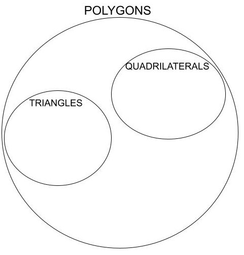
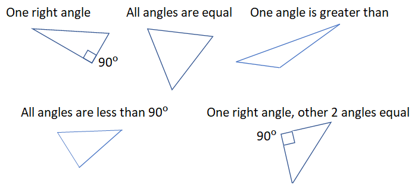

Extend Yourself - K'NEX STEM Simple Machines: Build Machines with Gears
 Build a New Simple Machine
Build a New Simple Machine
Try building a different simple machine like a wheel and axle, inclined plane, pulley, or lever. (You may need to use one of the other K'NEX STEM kits.) How does this gear machine work differently than the one you built? How could you combine two simple machines into a complex machine that can do even more?
Scavenger Hunt
Go on a gear scavenger hunt. Pick a room in your house, like the kitchen or garage. How many gears can you find? Can you recreate one of those machines with your K'NEX STEM Gear kit?
Polygon Venn Diagram
Create a VENN diagram for polygons, similar to the one below:

Decide where pentagons, octagons, and other polygons fit in the VENN. Then answer these questions:
- What are the attributes of the largest group?
- What are the attributes of the smallest or most specialized group?
- Do any groups fit inside another group?
- Where do circles belong in this Venn?
Triangle Challenge
Challenge several friends or family members to draw five different triangles. Check their results against the image below. Which ones did they draw? Did they use any similar or congruent triangles as different?

Think about how you can explain or show why all equilateral triangles are similar, but all right triangles are not similar.